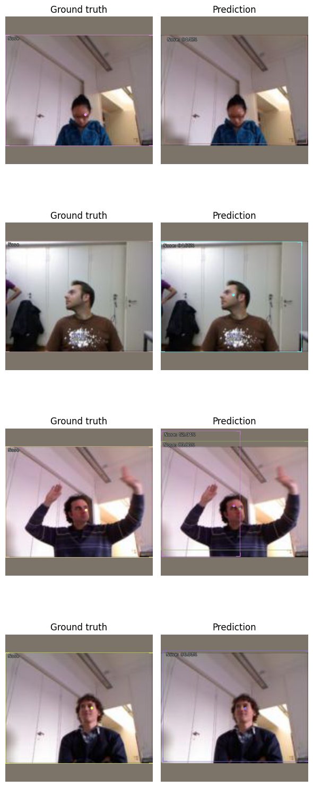

Getting Started with Keypoint Detection using IceVision
Introduction
This tutorial walk you through the different steps of training the biwi dataset. the IceVision Framework is an agnostic framework. As an illustration, we will train our model using both the fastai library, and pytorch-lightning libraries.
For more information about how the biwi dataset as well as its corresponding parser check out the biwi folder in icedata.
Installing IceVision and IceData
Install from pypi...
# Torch - Torchvision - IceVision - IceData - MMDetection - YOLOv5 - EfficientDet Installation
!wget https://raw.githubusercontent.com/airctic/icevision/master/icevision_install.sh
# Choose your installation target: cuda11 or cuda10 or cpu
!bash icevision_install.sh cuda11
... or from icevision master
# # Torch - Torchvision - IceVision - IceData - MMDetection - YOLOv5 - EfficientDet Installation
# !wget https://raw.githubusercontent.com/airctic/icevision/master/icevision_install.sh
# # Choose your installation target: cuda11 or cuda10 or cpu
# !bash icevision_install.sh cuda11 master
# Restart kernel after installation
import IPython
IPython.Application.instance().kernel.do_shutdown(True)
Imports
from icevision.all import *
Model
To create a model, we need to:
- Choose one of the models supported by IceVision
- Choose one of the backbones corresponding to a chosen model
- Determine the number of the object classes: This will be done after parsing a dataset. Check out the Parsing Section
Choose a model and backbone
TorchVision
model_type = models.torchvision.keypoint_rcnn
backbone = model_type.backbones.resnet34_fpn()
Datasets : Biwi
Biwi dataset is tiny dataset that contains 200 images of 1 class Nose.
We will use icedata to download the dataset and get it with pre-defined transforms for training and validation.
Note: If you want a more challenging dataset take a look at OCHuman.
# Loading Data
data_dir = icedata.biwi.load_data()
train_ds, valid_ds = icedata.biwi.dataset(data_dir)
Displaying the same image with different transforms
Note:
Transforms are applied lazily, meaning they are only applied when we grab (get) an item. This means that, if you have augmentation (random) transforms, each time you get the same item from the dataset you will get a slightly different version of it.
samples = [train_ds[0] for _ in range(3)]
show_samples(samples, ncols=3)
DataLoader
# DataLoaders
train_dl = model_type.train_dl(train_ds, batch_size=8, num_workers=4, shuffle=True)
valid_dl = model_type.valid_dl(valid_ds, batch_size=8, num_workers=4, shuffle=False)
model_type.show_batch(first(valid_dl), ncols=4)

Model
Now that we determined the number of classes (num_classes) and number of keypoints (num_keypoints), we can create our model object.
# TODO: Better flow for train_ds
model = model_type.model(backbone=backbone, num_keypoints=1, num_classes=icedata.biwi.NUM_CLASSES)
Metrics
Metrics for keypoint are a work in progress
# metrics = [COCOMetric(metric_type=COCOMetricType.keypoint)]
Training
IceVision is an agnostic framework meaning it can be plugged to other DL framework such as fastai2, and pytorch-lightning.
You could also plug to oth DL framework using your own custom code.
Training using fastai
learn = model_type.fastai.learner(dls=[train_dl, valid_dl], model=model)
learn.lr_find()
SuggestedLRs(lr_min=8.317637839354575e-05, lr_steep=0.00010964782268274575)

learn.fine_tune(10, 3e-5, freeze_epochs=1)
| epoch | train_loss | valid_loss | time |
|---|---|---|---|
| 0 | 8.645806 | 7.013292 | 00:28 |
| epoch | train_loss | valid_loss | time |
|---|---|---|---|
| 0 | 6.684147 | 6.487582 | 00:26 |
| 1 | 6.277197 | 5.731036 | 00:26 |
| 2 | 5.836541 | 5.114465 | 00:26 |
| 3 | 5.408250 | 4.583161 | 00:20 |
| 4 | 4.996461 | 4.225419 | 00:23 |
| 5 | 4.657006 | 3.987719 | 00:21 |
| 6 | 4.335581 | 3.832931 | 00:20 |
| 7 | 4.114164 | 3.862228 | 00:20 |
| 8 | 3.902603 | 3.697594 | 00:20 |
| 9 | 3.768973 | 3.694008 | 00:21 |
Training using Lightning
class LightModel(model_type.lightning.ModelAdapter):
def configure_optimizers(self):
return SGD(self.parameters(), lr=3e-5)
light_model = LightModel(model)
trainer = pl.Trainer(max_epochs=2, gpus=1)
trainer.fit(light_model, train_dl, valid_dl)
Show Results
model_type.show_results(model, valid_ds, detection_threshold=.5)

Inference
Predicting a batch of images
Instead of predicting a whole list of images at one, we can process small batches at the time: This option is more memory efficient.
NOTE: For a more detailed look at inference check out the inference tutorial
infer_dl = model_type.infer_dl(valid_ds, batch_size=4, shuffle=False)
preds = model_type.predict_from_dl(model, infer_dl, keep_images=True)
show_preds(preds=preds[:4])

Happy Learning!
If you need any assistance, feel free to join our forum.